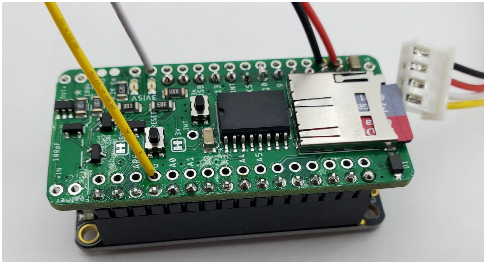
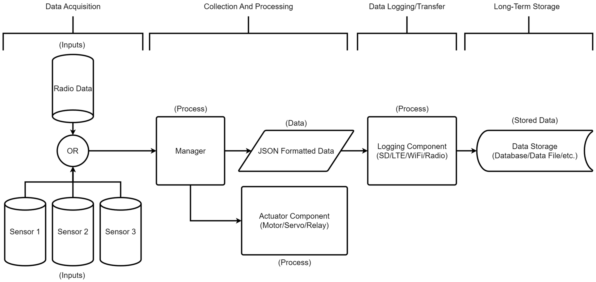

|
Loom 4 v4.5
Arduino library for Internet of Things Rapid Prototyping in environmental sensing
|
Researchers and citizen scientists often struggle with the complexity and cost of deploying custom sensor networks in the field. Loom provides a plug-and-play framework that simplifies sensor integration, wireless communication, and data collection.
Loom is built on a modular, object-oriented architecture that emphasizes flexibility, extensibility, and low power consumption—key traits for environmental, agricultural, and remote IoT deployments.
At the heart of most Loom-based deployments is the Adafruit Feather M0, a lightweight ARM Cortex-M0+ microcontroller with built-in USB, ample GPIO, and excellent compatibility with a wide range of I2C and serial sensors. Its compact size and low power draw make it ideal for field-deployed sensing devices.
To meet the power and data integrity needs of long-term sensing projects, Loom integrates seamlessly with the Hypnos board—a custom shield developed by the OPEnS Lab. The Hypnos combines three essential features:
The Hypnos board was specifically designed to streamline deployment and reduce complexity across OPEnS Lab projects. Its cost-effectiveness and open-source design (see the HardwareX article) make it ideal for scaling across diverse applications.

Loom uses a central Manager class to register and coordinate sensors, actuators, and services. Each module—whether a sensor like a BME280 or a service like MQTT—is encapsulated in its own class, allowing plug-and-play extensibility without affecting the rest of the system.
Manager.metadata.The Loom framework follows a structured data processing model consisting of four main stages: Data Acquisition, Collection & Processing, Data Logging/Transfer, and Long-Term Storage. This pipeline ensures that environmental data collected from sensors is efficiently processed, logged, and made ready for analysis or long-term archiving.
